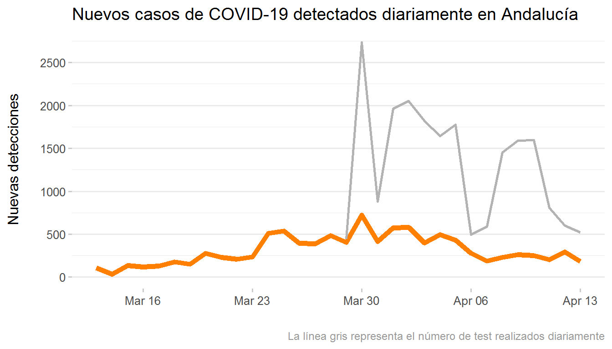
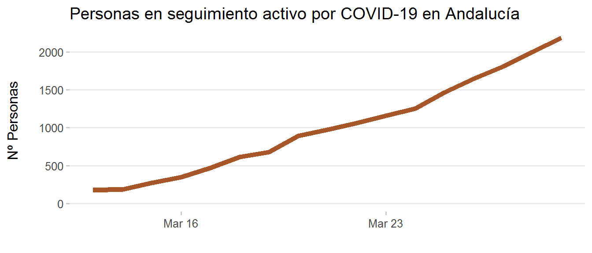
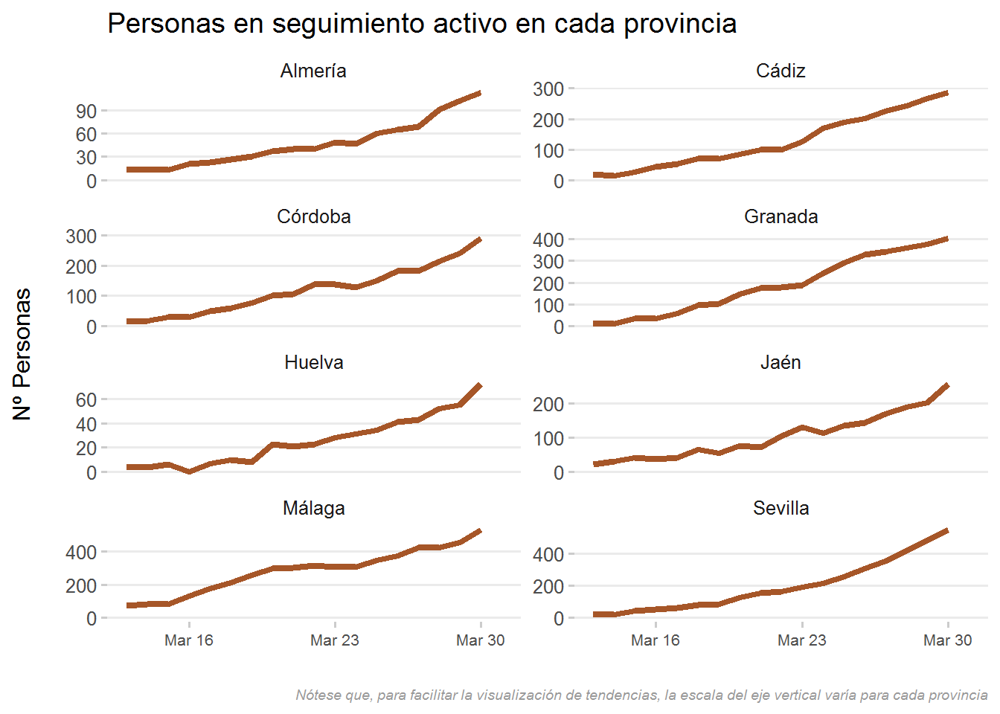
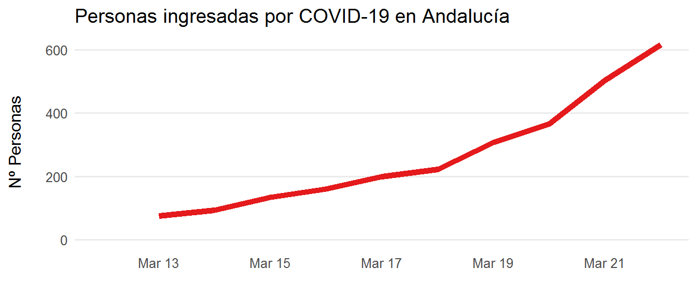
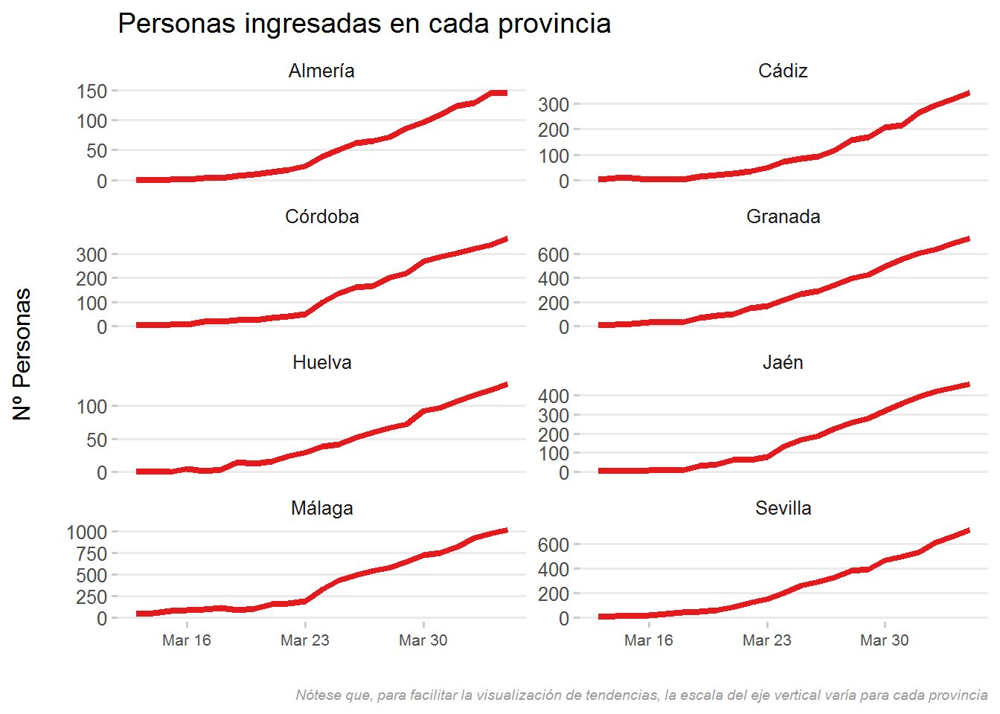
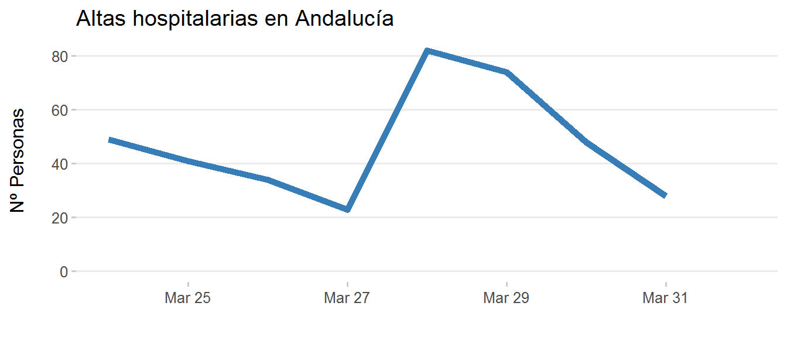
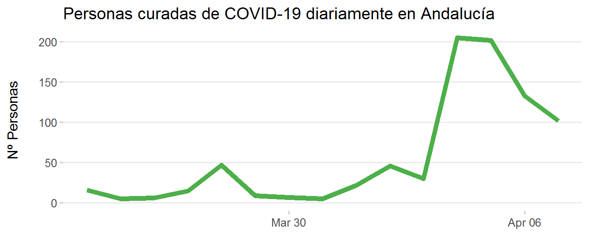

Evolución del coronavirus (COVID-19) en Andalucía
Aquí se visualiza la evolución de la enfermedad del coronavirus (COVID-19) en Andalucía, según los datos oficiales ofrecidos por la Consejería de Salud y Familias. A diferencia de otras visualizaciones más extendidas, que representan datos acumulados en el tiempo, aquí se enfatizan las variaciones diarias absolutas (no acumuladas) en número de casos detectados, personas en seguimiento activo, ingresadas, dadas de alta y curadas, y número de fallecimientos.
Los datos se actualizan diariamente. Tanto los datos como el código empleado para generar estas visualizaciones está disponible aquí.
Última actualización: 2020-03-30
- Casos detectados
- Personas en seguimiento activo
- Personas ingresadas en centros sanitarios
- Altas hospitalarias
- Personas curadas
- Fallecimientos
Casos detectados
Debe tenerse en cuenta que el número de casos detectados depende en gran medida del número de test realizados. Por tanto, un aumento o disminución en el número de casos detectados cada día puede deberse a haber realizado más o menos tests, no a variaciones en la incidencia de la enfermedad.


Personas en seguimiento activo
Número neto de personas en seguimiento activo domiciliario por COVID-19.


Personas ingresadas en centros sanitarios
Número neto de personas que permanecen ingresadas en centros sanitarios de Andalucía cada día, teniendo en cuenta tanto los nuevos ingresos como las altas hospitalarias.


Altas hospitalarias
Número de personas que reciben el alta tras estar ingresadas en centros hospitalarios por COVID-19.

Personas curadas

Fallecimientos


Realizado por Francisco Rodríguez Sánchez a partir de los datos ofrecidos por la Consejería de Salud y Familias de la Junta de Andalucía.